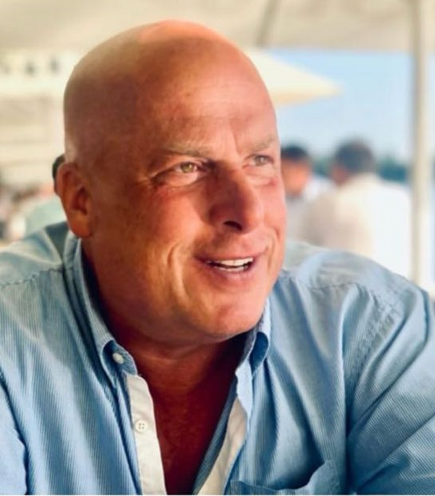

Kostenfreiheit
Als Geschädigter haben Sie stets das Recht, einen unabhängigen Sachverständigen Ihrer Wahl zu beauftragen. Die Kosten übernimmt die Haftpflichtversicherung des Unfallverursachers.
Kfz-Sachverständiger · Celle und Umgebung
Persönliche, kompetente Beratung bei der Schadensabwicklung. Ihr Kfz-Gutachten wird schnell und unkompliziert erstellt und ist unabhängig von jeder Versicherung.
Bei einem unverschuldeten Unfall trägt in der Regel die Haftpflichtversicherung des Unfallverursachers die Kosten für Ihr Gutachten. Sie haben das Recht, den Sachverständigen frei zu wählen.

So läuft es ab
Sie kümmern sich um das Wesentliche. Wir übernehmen Dokumentation, Bewertung und die Abstimmung mit Versicherung, Werkstatt oder Anwalt.
Rufen Sie an oder schreiben Sie per WhatsApp. Wir klären kurz den Unfallhergang und was Sie jetzt brauchen.
Termin nach Absprache. Alle Schäden werden vor Ort schriftlich und mit Fotos erfasst, auch Vor- und Altschäden.
Reparaturkosten, Wertminderung, Reparaturdauer, bei Totalschaden Restwert und Wiederbeschaffungswert. Zügig und gerichtsfest.
Das Gutachten geht an die Versicherung. Sie entscheiden auf sicherer Grundlage: reparieren, fiktiv abrechnen oder verkaufen.
Leistungen
Pkw, Lkw, Nutzfahrzeug, Motorrad, Oldtimer oder E-Bike. Jedes Gutachten wird neutral erstellt und ist vor Gericht anerkannt.
Nach einem unverschuldeten Unfall: alle Schäden detailliert dokumentiert, inklusive Reparaturdauer und Wertminderung. Bei Totalschaden mit Restwert und Wiederbeschaffungswert. Die Kosten trägt in der Regel die gegnerische Versicherung.
Zieht das Auto nach dem Kauf nach links oder stimmen die Spaltmaße nicht? Verschwiegene Vorschäden und mangelhafte Reparaturen werden neutral festgehalten, damit Sie gegenüber Verkäufer oder Werkstatt abgesichert sind.
Normale Gebrauchsspuren sind keine Schäden. Kleine Kratzer, Steinschläge oder Dellen ohne Lackabplatzung rechtfertigen keine Wertminderung. Ein unabhängiges Gutachten schützt Sie vor überzogenen Nachforderungen.
Der reale Marktwert Ihres Fahrzeugs, objektiv belegt. Sonderausstattung sowie Vor- und Altschäden werden dokumentiert. Ideal beim Kauf, Verkauf, für die Versicherung oder Ihren Oldtimer.
Was ist das unreparierte Fahrzeug noch wert? Wir ermitteln den Restwert regional oder europaweit, holen Angebote ein und Sie entscheiden risikofrei: reparieren oder verkaufen. Auch bei selbstverschuldetem Unfall.
Wenn der Hergang strittig ist: technische Rekonstruktion des Unfalls als belastbare Grundlage für Anwalt, Versicherung und Gericht.
Gutachten statt Kostenvoranschlag
Versicherungen akzeptieren gern einen Kostenvoranschlag mit Fotos und behaupten, einen Sachverständigen müssten Sie selbst bezahlen. Gesetzlich ist das eindeutig anders geregelt.
| Erfasst | Kostenvoranschlag | Kfz-Gutachten |
|---|---|---|
| Reparaturkosten | ja | ja |
| Wertminderung des Fahrzeugs | nein | ja |
| Reparaturdauer und Ausfallzeit | nein | ja |
| Restwert und Wiederbeschaffungswert | nein | ja |
| Vor- und Altschäden dokumentiert | nein | ja |
| Vor Gericht anerkannt | nein | ja |
| Neutral, unabhängig von Werkstatt und Versicherung | nein | ja |
| Im Haftpflichtfall werden die Gutachtenkosten dem Schaden zugerechnet und von der Versicherung des Unfallverursachers getragen. Ausnahme: Bagatellschäden unterhalb der üblichen Grenze. Das klären wir vorab am Telefon. | ||
Als Geschädigter haben Sie stets das Recht, einen unabhängigen Sachverständigen Ihrer Wahl zu beauftragen. Die Kosten übernimmt die Haftpflichtversicherung des Unfallverursachers.
Neben den Reparaturkosten werden auch Wertminderung, voraussichtliche Reparaturdauer und Ausfallzeiten erfasst. Erst damit sind Ihre Ansprüche vollständig beziffert.
Bei einem Schaden verfolgen mehrere Parteien eigene Interessen. Ein neutrales Gutachten bewertet und dokumentiert die Sachlage objektiv, in Ihrem Sinne.
Lehnt die gegnerische Versicherung Verantwortung ganz oder teilweise ab, sind Sie mit einem Gutachten auf der sicheren Seite. Im Streitfall wird es vor Gericht anerkannt.
Sie möchten nicht reparieren lassen? Bei Bagatellschäden oder älteren Fahrzeugen können Sie sich den Schaden auszahlen lassen. Das Gutachten sichert dabei auch die Wertminderung.
17 Jahre bei Europas größter Sachverständigenorganisation. Daraus entstehen Ratschläge, die auch im Umgang mit Anwälten und Versicherungen wertvoll sind.
Über mich
Mein Name ist Patric Schneider. Ich bin Kraftfahrzeugtechniker-Meister und Sachverständiger für Fahrzeugtechnik in Celle. 17 Jahre lang war ich als Kfz-Sachverständiger bei der größten Sachverständigenorganisation Deutschlands tätig und kenne alle Bereiche der Schadenregulierung aus der Praxis.
Ob Schadengutachten nach einem Verkehrsunfall, unfallanalytisches Gutachten bei Rechtsstreitigkeiten oder Wertgutachten für Ihren geliebten Oldtimer: Sie bekommen Ihr Gutachten mit dem passenden Sachverstand, zügig und ohne Umwege.
Unfall-Checkliste
Sechs Schritte in der richtigen Reihenfolge. Haken Sie ab, was erledigt ist. Die Liste bleibt auf Ihrem Gerät gespeichert.
Häufige Fragen
Bei einem unverschuldeten Unfall werden die Gutachtenkosten dem Schaden zugerechnet. Die Haftpflichtversicherung des Unfallverursachers übernimmt sie in der Regel vollständig.
Bei einem selbstverschuldeten Unfall, einem Wert- oder Beweissicherungsgutachten beauftragen Sie uns direkt. Sie erhalten vorab ein individuelles Angebot.
Nein. Als Geschädigter haben Sie das Recht, einen unabhängigen Sachverständigen Ihrer Wahl zu beauftragen. Ein von der Versicherung gestellter Gutachter arbeitet im Auftrag der Versicherung.
Die Besichtigung vereinbaren wir kurzfristig. Das Gutachten wird zügig erstellt, damit die Wartezeit bis zur Reparatur oder zum Ersatzfahrzeug so kurz wie möglich bleibt.
Ja, das nennt sich fiktive Abrechnung. Sie ist bei Bagatellschäden, älteren Fahrzeugen oder bei Eigenreparatur üblich. Das Gutachten beziffert dabei nicht nur die Reparaturkosten, sondern auch die Wertminderung, die beim späteren Verkauf relevant ist.
Dann ermitteln wir Restwert und Wiederbeschaffungswert und holen auf Wunsch Angebote für das beschädigte Fahrzeug ein. Auf dieser Grundlage entscheiden Sie, ob sich eine Reparatur lohnt oder der Verkauf sinnvoller ist.
Pkw, Lkw und Nutzfahrzeuge, Motorräder, Oldtimer und auch Elektrofahrräder.
Kontakt
Für eine kostenlose Erstberatung, einen Besichtigungstermin oder ein individuelles Angebot. Am schnellsten erreichen Sie uns telefonisch oder per WhatsApp.
Patric Schneider · Sachverständiger für Fahrzeugtechnik · Kraftfahrzeugtechniker-Meister